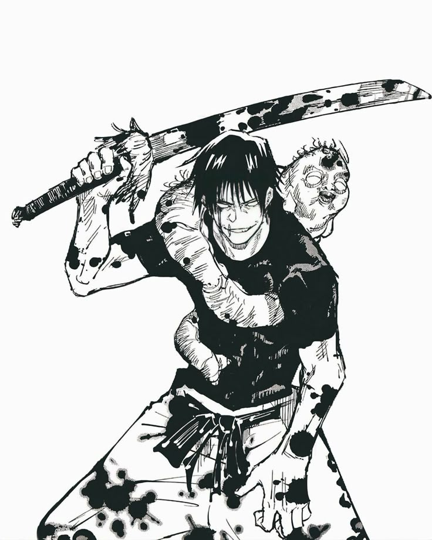

Iaido, the Japanese art of quick-draw swordsmanship, suits Toji for its focus on instantaneous draws and cuts, directly supporting his wield of the Split Soul Katana. Iaido's principles of calmness, precision, and one-strike kills echo Toji's composed yet explosive attacks. This captures his decisive, lightning-fast iaijutsu, ending battles with a single, perfect stroke from calm resolve.
